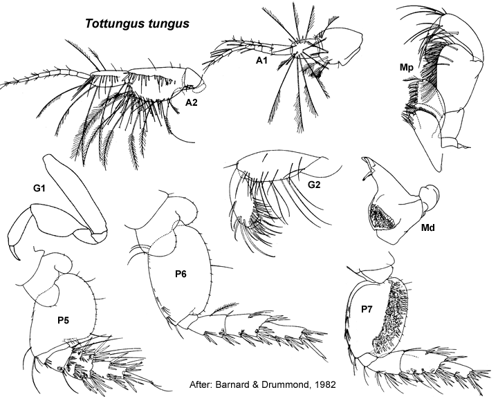

Tottungus Barnard & Drummond, 1982: 126
Type species. Tottungus tungus Barnard & Drummond, 1982, by monotypy.
Description.Maxilla 1 palp with some setae displaced subapically.
Gnathopod 1 simple; coxa small, slightly larger than coxa 2. Gnathopod 2 minutely subchelate. Pereopod 3 coxa large, larger than coxa 4. Pereopod 4 coxa large. Pereopod 5 dactylus without robust setae. Pereopod 7 coxa without long posterior spine; basis fully expanded.
Uropod 1 inner ramus not fused to peduncle. Uropod 2 inner ramus not fused to peduncle. Telson emarginate or entire.

___________________________
This
publication should be cited as: Kilgallen, N.M. & Lowry, J.K. 2008.
Urohaustoriidae (Amphipoda): World Genera and Species. Version 1. 1
January 2008. https://crustacea.net.